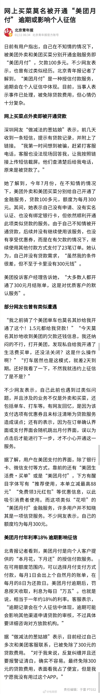
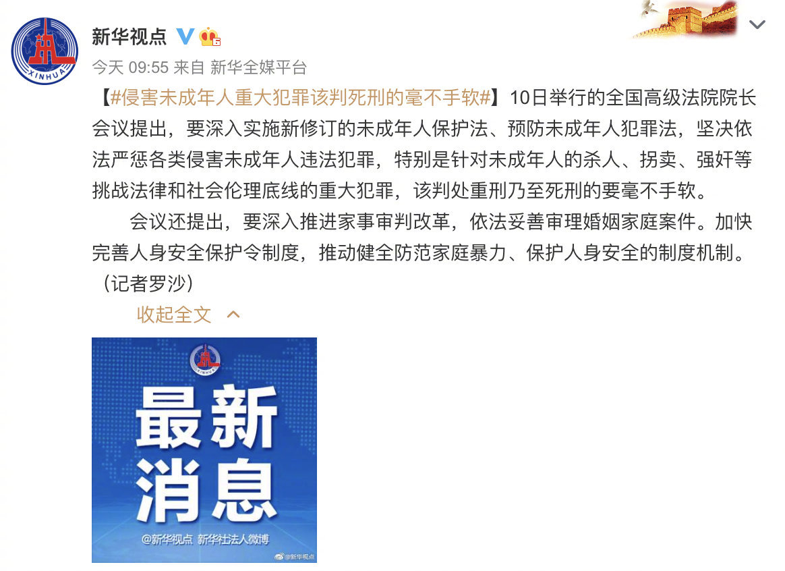

美团每次付完款都会跳出页面，喊你领红包。点进去有小字说明是要开通月付给的福利。真心话，美团App做得真好，操作行云流水，用户很容易就顺势点下去开通了这个本不需要的高利率信用卡。评论里给美团洗地的人，要点脸吧！@电商报:【网上买菜莫名被开通美团月付】据北京青年报报道，日前有用户指出，自己在不知情的情况下，被美团外卖和美团买菜分别开通金融服务即 “美团月付”，欠款 100 多元。据悉，“美团月付”是一种授信付款服务，逾期会在个人征信中体现。目前，当事人表示事件已处理，被免除贷款费用，但心情仍十分复杂。消息称某用户使用美团APP被开通“美团月付”
所以把女儿培养成傻白甜的父母，要么自身也是蠢货，要么就是没把女儿当人看。//@厚多士的态度:同意。现代交往不能要求无性，避孕和防病成了重点。我认识好几个「生性潇洒」的男生了女儿都很焦虑。他们说太知道男人怎么玩弄女性，所以更担忧---:抱歉，作者已设置仅展示半年内微博，此微博已不可见。
吃相嘴脸都难看，而且摆明了态度：我就是吃准你们消费者懒且蠢，还不思考的特点。//@catbert:美团那个特别容易上当，滴滴每次都自动跳滴滴支付，要手动选微信支付。@电商报:【网上买菜莫名被开通美团月付】据北京青年报报道，日前有用户指出，自己在不知情的情况下，被美团外卖和美团买菜分别开通金融服务即 “美团月付”，欠款 100 多元。据悉，“美团月付”是一种授信付款服务，逾期会在个人征信中体现。目前，当事人表示事件已处理，被免除贷款费用，但心情仍十分复杂。消息称某用户使用美团APP被开通“美团月付”
//@钟烧饼:京东也一样，收个到付快递，哗哗点付款，第一个最大的红色选项就刷过去了，好在边上的京东大哥发现，赶紧取消，再看是京东白条，14块钱的快递费给我打白条滴滴开通支付之后每次都默认滴滴支付，幸好没有绑卡，太恶心了！@电商报:【网上买菜莫名被开通美团月付】据北京青年报报道，日前有用户指出，自己在不知情的情况下，被美团外卖和美团买菜分别开通金融服务即 “美团月付”，欠款 100 多元。据悉，“美团月付”是一种授信付款服务，逾期会在个人征信中体现。目前，当事人表示事件已处理，被免除贷款费用，但心情仍十分复杂。消息称某用户使用美团APP被开通“美团月付”
看到段永平一再强调的本分，被学生在公司这么实践，有啼笑皆非的感觉。//@董指导挤出俩酒窝:段永平在雪球上和网友谈笑风生，这种亲和力，学生怎么没学会啊。---:抱歉，作者已设置仅展示半年内微博，此微博已不可见。
我对#姣姣#说：像我这么外向爱热闹的人，现在也更愿意一个人呆着，是因为发现很多时候，社交对我来说是负担。让别人开心的话，我就要花很多时间做聆听者，或者是对一些很脑残的话，点头微笑。而我又不能大放厥词讲我的观点，因为我这么极端，只要把我的真实想法说出来，会惹怒一大片人。姣姣：你还知道你说话难听啊？我：这点儿自知之明还是有的，愿不愿意约束自己，就是另外一回事儿了。
以前不愿意跟老公倾诉，因为他牛头不对马嘴的回复，经常让我火更大，我以为存在知己，只是自己没遇到。现在发现能有人借个耳朵出来让你放心倾诉就很难得啦。@范志红_原创营养信息:【可以无条件倾诉的人】有没有这种时候，觉得自己需要一个人，可以无所顾忌地倾诉？不考虑会不会打扰，不考虑是不是唠叨，不考虑会被别人传闲话......有任何事情，第一时间能和她/他交流，让你或躁动或恐惧或悲伤的心，能够有人抚慰，哪怕对方只是耐心地听着，就能哭出来，笑出来，然后觉得自己不是孤立无援。哪怕可以倾诉内心中一半的话，也足够减压，足够欣慰。多么专业的心理咨询热线，也不能替代这样的感受。如果有这样的人，要珍惜。不管她/他是你的父母、兄弟姐妹、亲戚、闺蜜还是伴侣。如果没有这样的人，要努力去寻找。一个人消化一切，太苦了，心理压力太大了。随着时间推移，随着压力增大，会感觉越来越需要有这样可以无条件接纳我们的人。否则，一切情绪，都只能放在只有自己知道的树洞里。
最近那个婴儿湿疹膏激素含量超标的厂商，也适用这个法律解释吧？也是侵害未成年人的重大犯罪，而且侵害很多未成年人。希望一起严厉处罚。@南风窗:【全国高级法院院长会议：侵害未成年人的重大犯罪，该判死刑的要毫不手软！】10日举行的全国高级法院院长会议提出，要深入实施新修订的未成年人保护法、预防未成年人犯罪法，坚决依法严惩各类侵害未成年人违法犯罪，特别是针对未成年人的杀人、拐卖、强奸等挑战法律和社会伦理底线的重大犯罪，该判处重刑乃至死刑的要毫不手软。#侵害未成年人重大犯罪该判死刑的毫不手软#（新华视点）
我总觉得#姣姣#上大学后，会有个分水岭。她的生活不会再局限于家和学校两点一线之间，视野和活动空间都大很多，也不会只通过我这个小喇叭广播电台获取一些社会信息了。所以，我得抓紧不多的时间，给闺女洗洗脑，让她成为女权。
姣姣不愿冒犯别人，洗脑能让她能做到自己感受优先，守住自己的边界也不错了。//@凝碧的波痕:玎宝已经自认是女权主义者了。她们班还有个女孩，一听老师说一些性别刻板印象的话就会对玎宝说：“他再说我要打拳了”。@Ada李力:我总觉得#姣姣#上大学后，会有个分水岭。她的生活不会再局限于家和学校两点一线之间，视野和活动空间都大很多，也不会只通过我这个小喇叭广播电台获取一些社会信息了。所以，我得抓紧不多的时间，给闺女洗洗脑，让她成为女权。
容易相信阴谋论，容易中蛊的人，有哪些共同特征？关注了半天的智者，最后发现是个精神病，也够闹心的。//@武志红:让众多本来看似理性的人一起变疯，失去对现实的判断力，而沉浸在幻想乃至妄想中，也是懂王的魅惑力。---:抱歉，作者已设置仅展示半年内微博，此微博已不可见。
记得问过#姣姣#假设有三个女生，一个是学霸，考试经常年级第一；一个是校花，学校各种场面活动都是她主持，是很多男生心目中女神；一个性格好爱交友，男生女生都喜欢她。你更愿意做谁？姣姣说：校花如果成绩不好的话，也不会成为女神。在学校里，无论怎么表现，没成绩是不行的，所以还是选学霸。看来闺女拎得清嘛。